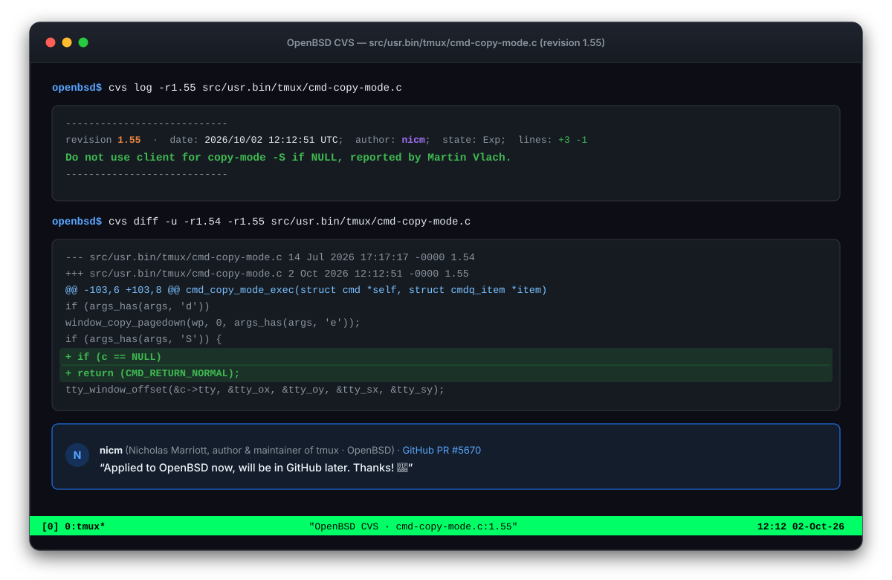

In OpenBSD and tmux since 2 Oct 2026 Upstream bug fix in tmux
tmux: server crash on copy-mode -S without attached client
BudgetScan flagged a missing NULL pointer check in the copy-mode -S handler of tmux, the widely used terminal multiplexer. When executed in a server context without an attached terminal client (such as from hooks or background command queues), the missing check crashed that user’s tmux server with SIGSEGV, ending all of its sessions and the programs running in them. Nicholas Marriott, the author and lead maintainer of tmux, applied our fix directly to OpenBSD CVS.
What was wrong
The copy-mode command provides the -S flag to control scrolling from mouse slider and scrollbar events. When executing cmd_copy_mode_exec(), tmux retrieves a reference to the active command client via cmdq_get_client(item).
When an interactive terminal client runs the command, c points to the client struct and its associated terminal (c->tty). However, tmux commands can also be scheduled on the server without any attached terminal client — for example, inside ~/.tmux.conf, through background automation, or via server hooks like pane-died (set-hook -g pane-died "copy-mode -S").
In those clientless contexts, c is NULL. While the preceding -M mouse handler explicitly guarded against this:
if (c == NULL || c->session != s)
return (CMD_RETURN_NORMAL);the -S branch omitted the check entirely. It immediately passed &c->tty into tty_window_offset(), resulting in an immediate segmentation fault (SIGSEGV). One tmux server process manages all of a user’s sessions (by default each user has their own server and socket), so the crash ended every window and pane on that server, along with the programs running in them. The trigger is a command run without a client, for example from a hook in the user’s own configuration, so this is a robustness fix rather than a security vulnerability.

How it was fixed
We submitted a pull request with a defensive NULL check and an automated regression test reproducing the crash without an attached client:
Index: src/usr.bin/tmux/cmd-copy-mode.c
===================================================================
RCS file: /cvs/src/usr.bin/tmux/cmd-copy-mode.c,v
retrieving revision 1.54
retrieving revision 1.55
diff -u -p -r1.54 -r1.55
--- src/usr.bin/tmux/cmd-copy-mode.c 14 Jul 2026 17:17:17 -0000 1.54
+++ src/usr.bin/tmux/cmd-copy-mode.c 2 Oct 2026 12:12:51 -0000 1.55
@@ -103,6 +103,8 @@ cmd_copy_mode_exec(struct cmd *self, struct cmdq_item *item)
if (args_has(args, 'd'))
window_copy_pagedown(wp, 0, args_has(args, 'e'));
if (args_has(args, 'S')) {
+ if (c == NULL)
+ return (CMD_RETURN_NORMAL);
tty_window_offset(&c->tty, &tty_ox, &tty_oy, &tty_sx, &tty_sy);
window_copy_scroll(wp, c->tty.mouse_slider_mpos, event->m.y,
tty_oy, args_has(args, 'e'));The included regression test (regress/copy-mode-no-client-scroll.sh) triggers copy-mode -S from a pane-died hook without an attached client. On the unpatched codebase the test immediately reproduced the segmentation fault; with the patch applied, the server safely ignored the command and the test passed.
Maintainer Nicholas Marriott accepted the fix and committed revision 1.55 directly to OpenBSD's source tree:
“Applied to OpenBSD now, will be in GitHub later. Thanks!”
It did: the same afternoon the change was synced to tmux on GitHub as commit 5932140.
Timeline
- 1 Oct 2026. BudgetScan flagged the unguarded client pointer in
cmd-copy-mode.c. Manual code audit confirmed the server crash vector via hooks. We opened pull request #5670 with the fix and regression test. - 2 Oct (12:12 UTC). tmux author and maintainer Nicholas Marriott (
nicm) reviewed the pull request, replied on GitHub, and committed revision 1.55 to OpenBSD CVS: “Do not use client for copy-mode -S if NULL, reported by Martin Vlach.” - 2 Oct (14:10 UTC). The change was synced from OpenBSD to the tmux repository on GitHub as commit 5932140.
How to read this
The scanner highlighted the unguarded pointer as an actionable lead, and an engineer confirmed the control flow, isolated the hook trigger, wrote the reproducible test, and submitted the patch. Upstream maintainer Nicholas Marriott validated and committed the fix to OpenBSD. That is how automated security scanning should work: findings are leads for human inspection and careful verification, not unquestioned verdicts. Huge thanks to Nicholas Marriott for the swift, gracious response and seamless integration into OpenBSD.